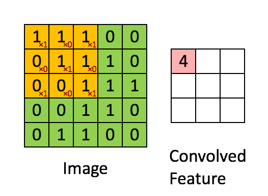

TensorFlow 2.0 (五) - mnist手写数字识别(CNN卷积神经网络)
源代码/数据集已上传到
Github - tensorflow-tutorial-samples

大白话讲解卷积神经网络工作原理，推荐一个bilibili的讲卷积神经网络的视频，up主从youtube搬运过来，用中文讲了一遍。
这篇文章是 TensorFlow 2.0 Tutorial 入门教程的第五篇文章，介绍如何使用卷积神经网络（Convolutional Neural Network, CNN）来提高mnist手写数字识别的准确性。之前使用了最简单的784x10的神经网络，达到了 0.91 的正确性，而这篇文章在使用了卷积神经网络后，正确性达到了0.99
卷积神经网络（Convolutional Neural Network, CNN）是一种前馈神经网络，它的人工神经元可以响应一部分覆盖范围内的周围单元，对于大型图像处理有出色表现。
卷积神经网络由一个或多个卷积层和顶端的全连通层（对应经典的神经网络）组成，同时也包括关联权重和池化层（pooling layer）。这一结构使得卷积神经网络能够利用输入数据的二维结构。与其他深度学习结构相比，卷积神经网络在图像和语音识别方面能够给出更好的结果。这一模型也可以使用反向传播算法进行训练。相比较其他深度、前馈神经网络，卷积神经网络需要考量的参数更少，使之成为一种颇具吸引力的深度学习结构。
——维基百科
1. 安装TensorFlow 2.0
Google与2019年3月发布了TensorFlow 2.0，TensorFlow 2.0 清理了废弃的API，通过减少重复来简化API，并且通过Keras能够轻松地构建模型，从这篇文章开始，教程示例采用TensorFlow 2.0版本。
1
| pip install tensorflow==2.0.0-beta0
|
或者在这里下载whl包安装：https://pypi.tuna.tsinghua.edu.cn/simple/tensorflow/
2. 代码目录结构
1
2
3
4
5
6
7
8
9
10
11
12
13
| data_set_tf2/
|--mnist.npz
test_images/
|--0.png
|--1.png
|--4.png
v4_cnn/
|--ckpt/
|--checkpoint
|--cp-0005.ckpt.data-00000-of-00001
|--cp-0005.ckpt.index
|--predict.py
|--train.py
|
3. CNN模型代码（train.py）
模型定义的前半部分主要使用Keras.layers提供的Conv2D（卷积）与MaxPooling2D（池化）函数。
CNN的输入是维度为 (image_height, image_width, color_channels)的张量，mnist数据集是黑白的，因此只有一个color_channel（颜色通道），一般的彩色图片有3个（R,G,B）,熟悉Web前端的同学可能知道，有些图片有4个通道(R,G,B,A)，A代表透明度。对于mnist数据集，输入的张量维度就是(28,28,1)，通过参数input_shape传给网络的第一层。
1
2
3
4
5
6
7
8
9
10
11
12
13
14
15
16
17
18
19
20
21
22
23
24
| import os
import tensorflow as tf
from tensorflow.keras import datasets, layers, models
class CNN(object):
def __init__(self):
model = models.Sequential()
model.add(layers.Conv2D(32, (3, 3), activation='relu', input_shape=(28, 28, 1)))
model.add(layers.MaxPooling2D((2, 2)))
model.add(layers.Conv2D(64, (3, 3), activation='relu'))
model.add(layers.MaxPooling2D((2, 2)))
model.add(layers.Conv2D(64, (3, 3), activation='relu'))
model.add(layers.Flatten())
model.add(layers.Dense(64, activation='relu'))
model.add(layers.Dense(10, activation='softmax'))
model.summary()
self.model = model
|
model.summary()用来打印我们定义的模型的结构。
1
2
3
4
5
6
7
8
9
10
11
12
13
14
15
16
17
18
19
20
21
22
23
24
| Model: "sequential"
_________________________________________________________________
Layer (type) Output Shape Param
=================================================================
conv2d (Conv2D) (None, 26, 26, 32) 320
_________________________________________________________________
max_pooling2d (MaxPooling2D) (None, 13, 13, 32) 0
_________________________________________________________________
conv2d_1 (Conv2D) (None, 11, 11, 64) 18496
_________________________________________________________________
max_pooling2d_1 (MaxPooling2 (None, 5, 5, 64) 0
_________________________________________________________________
conv2d_2 (Conv2D) (None, 3, 3, 64) 36928
_________________________________________________________________
flatten (Flatten) (None, 576) 0
_________________________________________________________________
dense (Dense) (None, 64) 36928
_________________________________________________________________
dense_1 (Dense) (None, 10) 650
=================================================================
Total params: 93,322
Trainable params: 93,322
Non-trainable params: 0
_________________________________________________________________
|
我们可以看到，每一个Conv2D和MaxPooling2D层的输出都是一个三维的张量(height, width, channels)。height和width会逐渐地变小。输出的channel的个数，是由第一个参数(例如，32或64)控制的，随着height和width的变小，channel可以变大（从算力的角度）。
模型的后半部分，是定义输出张量的。layers.Flatten会将三维的张量转为一维的向量。展开前张量的维度是(3, 3, 64) ，转为一维(576)的向量后，紧接着使用layers.Dense层，构造了2层全连接层，逐步地将一维向量的位数从576变为64，再变为10。
后半部分相当于是构建了一个隐藏层为64，输入层为576，输出层为10的普通的神经网络。最后一层的激活函数是softmax，10位恰好可以表达0-9十个数字。
最大值的下标即可代表对应的数字，使用numpy很容易计算出来：
1
2
3
4
5
6
| import numpy as np
y1 = [0, 0.8, 0.1, 0.1, 0, 0, 0, 0, 0, 0]
y2 = [0, 0.1, 0.1, 0.1, 0.5, 0, 0.2, 0, 0, 0]
np.argmax(y1)
np.argmax(y2)
|
4. mnist数据集预处理（train.py）
1
2
3
4
5
6
7
8
9
10
11
12
13
| class DataSource(object):
def __init__(self):
data_path = os.path.abspath(os.path.dirname(__file__)) + '/../data_set_tf2/mnist.npz'
(train_images, train_labels), (test_images, test_labels) = datasets.mnist.load_data(path=data_path)
train_images = train_images.reshape((60000, 28, 28, 1))
test_images = test_images.reshape((10000, 28, 28, 1))
train_images, test_images = train_images / 255.0, test_images / 255.0
self.train_images, self.train_labels = train_images, train_labels
self.test_images, self.test_labels = test_images, test_labels
|
因为mnist数据集国内下载不稳定，因此数据集也同步到了Github仓库。
对mnist数据集的介绍，大家可以参考这个系列的第一篇文章TensorFlow入门(一) - mnist手写数字识别(网络搭建)。
5. 开始训练并保存训练结果（train.py）
1
2
3
4
5
6
7
8
9
10
11
12
13
14
15
16
17
18
19
20
21
22
| class Train:
def __init__(self):
self.cnn = CNN()
self.data = DataSource()
def train(self):
check_path = './ckpt/cp-{epoch:04d}.ckpt'
save_model_cb = tf.keras.callbacks.ModelCheckpoint(check_path, save_weights_only=True, verbose=1, period=5)
self.cnn.model.compile(optimizer='adam',
loss='sparse_categorical_crossentropy',
metrics=['accuracy'])
self.cnn.model.fit(self.data.train_images, self.data.train_labels, epochs=5, callbacks=[save_model_cb])
test_loss, test_acc = self.cnn.model.evaluate(self.data.test_images, self.data.test_labels)
print("准确率: %.4f，共测试了%d张图片 " % (test_acc, len(self.data.test_labels)))
if __name__ == "__main__":
app = Train()
app.train()
|
在执行python train.py后，会得到以下的结果：
1
2
3
4
5
6
7
8
9
10
11
12
13
14
15
| Train on 60000 samples
Epoch 1/5
60000/60000 [==============================] - 45s 749us/sample - loss: 0.1477 - accuracy: 0.9536
Epoch 2/5
60000/60000 [==============================] - 45s 746us/sample - loss: 0.0461 - accuracy: 0.9860
Epoch 3/5
60000/60000 [==============================] - 50s 828us/sample - loss: 0.0336 - accuracy: 0.9893
Epoch 4/5
60000/60000 [==============================] - 50s 828us/sample - loss: 0.0257 - accuracy: 0.9919
Epoch 5/5
59968/60000 [============================>.] - ETA: 0s - loss: 0.0210 - accuracy: 0.9930
Epoch 00005: saving model to ./ckpt/cp-0005.ckpt
60000/60000 [==============================] - 51s 848us/sample - loss: 0.0210 - accuracy: 0.9930
10000/10000 [==============================] - 3s 290us/sample - loss: 0.0331 - accuracy: 0.9901
准确率: 0.9901，共测试了10000张图片
|
可以看到，在第一轮训练后，识别准确率达到了0.9536，5轮之后，使用测试集验证，准确率达到了0.9901
在第五轮时，模型参数成功保存在了./ckpt/cp-0005.ckpt。接下来我们就可以加载保存的模型参数，恢复整个卷积神经网络，进行真实图片的预测了。
6. 图片预测（predict.py）
为了将模型的训练和加载分开，预测的代码写在了predict.py中。
1
2
3
4
5
6
7
8
9
10
11
12
13
14
15
16
17
18
19
20
21
22
23
24
25
26
27
28
29
30
31
32
33
34
35
36
37
38
39
40
| import tensorflow as tf
from PIL import Image
import numpy as np
from train import CNN
'''
python 3.7
tensorflow 2.0.0b0
pillow(PIL) 4.3.0
'''
class Predict(object):
def __init__(self):
latest = tf.train.latest_checkpoint('./ckpt')
self.cnn = CNN()
self.cnn.model.load_weights(latest)
def predict(self, image_path):
img = Image.open(image_path).convert('L')
img = np.reshape(img, (28, 28, 1)) / 255.
x = np.array([1 - img])
y = self.cnn.model.predict(x)
print(image_path)
print(y[0])
print(' -> Predict digit', np.argmax(y[0]))
if __name__ == "__main__":
app = Predict()
app.predict('../test_images/0.png')
app.predict('../test_images/1.png')
app.predict('../test_images/4.png')
|
最终，执行predict.py，可以看到：
1
2
3
4
5
6
7
8
9
10
| $ python predict.py
../test_images/0.png
[1. 0. 0. 0. 0. 0. 0. 0. 0. 0.]
-> Predict digit 0
../test_images/1.png
[0. 1. 0. 0. 0. 0. 0. 0. 0. 0.]
-> Predict digit 1
../test_images/4.png
[0. 0. 0. 0. 1. 0. 0. 0. 0. 0.]
-> Predict digit 4
|
与TensorFlow1.0的区别总结
- 数据集从tensorflow.examples.tutorials.mnist切换到了tensorflow.keras.datasets
- Keras的接口成为了主力，datasets, layers, models都是从Keras引入的，而且在网络的搭建上，代码更少，更为简洁。
附： 推荐
上一篇 « TensorFlow入门(四) - mnist手写数字识别(制作h5py训练集)
下一篇 » Pandas 数据处理(三) - Cheat Sheet 中文版